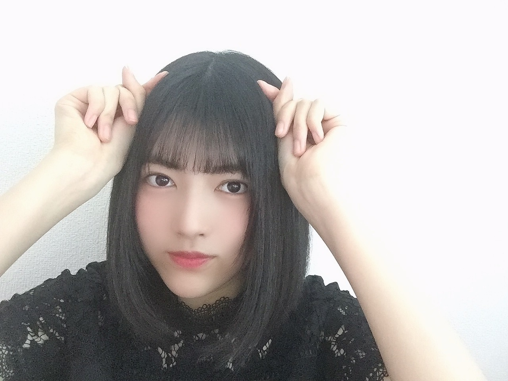

2020/0529Friお疲れ様です。林瑠奈です。
本日もお疲れ様です。
乃木坂46新4期生の林瑠奈です。
神奈川県出身高校2年生16歳
華咲くシックスティーンの林瑠奈です。
負けるなしょげるな林瑠奈、今日も1日頑張るな
(ピンポーン)
7周目となりました、ブログリレー。
りかからラップバトンと小型扇風機、個人的メッセージも受け取りました。
(めっちゃ課題頑張れます、ありがとう(´∀｀) )
あああああーと叫びながら回しますね。

ゼンマイTシャツです。
...........................................................................
「世界中の隣人よ」のMVが公開されました。
今はなかなか外に出ることができない世の中ですが、そんな世の中を支えてくださる全ての方に感謝したいです。
そして、ご卒業された方含め、乃木坂46全員での素敵な楽曲に参加させていただけたこと、本当にありがとうございます。
沢山の方に届いて欲しいです。
わたしも沢山聞きまくります！！
前を向いて生きましょう。
...........................................................................
前回のブログで「次回は好きな〇〇について話す」と言ったのですが、好きな〇〇って無限にありますね。
ひとつひとつを詳しく話すと大変なことになるので、ざっくり話します。
€ 好きなバンド
ミオヤマザキさん、GLAYさん、Official髭男dismさん、神聖かまってちゃんさん、等々
Official髭男dismさんの曲は「115万キロのフィルム」が1番好きなので、わたしの強い希望によりバンドでも演奏しました。
(色々あってお蔵入りになってしまったのですが)
€ 好きな食べ物
ごはんですね、白ごはん。ライスです。
ライスは殿堂入りなので、
1位 オムライス 2位 トマト 3位 たこ焼き
4位 冷めた切り干し大根 です。
最近は3位と4位がほぼ並んでます。
€ 好きなアニメ
「ラブライブ! 」はずっと好きですね。
μ'sは東條希ちゃん、Aqoursは黒澤ルビィちゃんが好きです。
「あの日見た花の名前を僕達はまだ知らない」と物語シリーズは殿堂入りですし、7月からの新スタートに向けて最近は「ひぐらしのなく頃に」を見てます。
「ご注文はうさぎですか？」と「きんいろモザイク」も好きですね。
自分で覚えてないぐらいアニメ見てるので、ときどき見返さねばなと思います。(そう思って買った、らき☆すたのDVDまだ見れてません)
これ知ってる？と聞いていただいた方が話し弾みそうです。
€ 好きなボーカロイド
これは選べません。皆さん好きです。
好きな曲もこれまた聴きすぎて挙げるとキリないです。
むかしむかしのきょうのぼく
Tell Your Would
真夏の少年と天ノ川戦争
ハジメテノオト
*ハロー、プラネット。
Dear
ローリンガール
アスノヨゾラ哨戒班
ウミユリ海底譚
サイハテ
リバースユニバース
メルト
SPiCa
コンビニ
まだまだありますけど、この辺りは時期問わず聴いてます。
ボーカロイドではないですけど、1、2ヶ月前までRAINBOW GIRLが再燃してました。
霜降り明星の粗品さんがYouTubeにあげているボーカロイド曲を最近聴いてます。
わたし、この感じ凄く好きです。

こんなもんですかね。沢山好きなものはあるので徐々に話していけたらと思います。
...........................................................................
堀さん、改めて2nd写真集の発売おめでとうございます。
とてもとても悩んだ結果、楽天ブックス版のものを購入しました。
課題に追われているので、落ち着いたら存分に堪能します。感想言わせて下さい！
...........................................................................
人の感情というのは思っているよりも単純で、それでいて自分ではどうしようもできない衝動が生まれることがあります。
あるものにもの凄く感情移入してしまうときってありませんか。今日はいつもの林瑠奈ではないのかもしれません。
(これもいつもの林瑠奈ではありますが、皆さんが思われているのとは少し違うかもしれないという意味です)
「え？今日こいつ大人しくね？」と思われた方いたらすみません。
次回までに第三宇宙速度で振り切ってきます。
前回のUFJは言い間違えたわけではないですよ
サランへヨ

さてさて明日はミュウちゃんです。
みゆちゃんにしてほしい髪型
"巻き髪ポンパドール"
前向きに検討してほしいです。
アディオス
2020/05/29 09:42

PROFILE
新4期生リレー
202104
| SUN | MON | TUE | WED | THU | FRI | SAT |
|---|---|---|---|---|---|---|
| 1 | 2 | 3 | ||||
| 4 | 5 | 6 | 7 | 8 | 9 | 10 |
| 11 | 12 | 13 | 14 | 15 | 16 | 17 |
| 18 | 19 | 20 | 21 | 22 | 23 | 24 |
| 25 | 26 | 27 | 28 | 29 | 30 | |

コメント(499)
質問 好きな季節はなんですか？理由もお願いします！
「世界中の隣人よ」見ました
最近ラジオなどでも流れたりして嬉しいです
115万キロのフィルム良いですよね
CMで聞いたときにすっかり心を掴まされました
ボーカロイドは全然聞かないので参考にさせて貰いますね
またの更新楽しみにしています
大人しめ林瑠奈も大変良きですたまに顔出してみて欲しいです。
次回の第三宇宙速度の林瑠奈も非常に楽しみにしております。
それでは！！！れ！！
たつロン⊿です。
毎回るなぴのブログくせ強すぎて大好きやわー
次のブログも楽しみです。
体調には気をつけてね
アディオス！
もう7週目って早いねー！
世界中の隣人よめっちゃいい曲やしMVもいいよねー！
卒業生から新4期生までいて本当にすごかった！
熱くなってきたから体調気を付けてね！
また書くね〜
はるはる
扇風機あるとあーーって言いたくなるよね！ね！
世界中の隣人よ聞きました！めっちゃいい曲でした！泣きました！ライブできる日が楽しみでしょうがないです！待ってます！
握手会開催できたら色々聞きますね！俺も音楽とかアニメ好きなんで！
ボカロは俺も大学受験の時にめっちゃきいてたなー！知ってるのいっぱいあったよー！
今日の感じのるなぴもまた好きだけど次の第三宇宙速度るなぴも楽しみにしてます笑
アディオス！
もうこれが7回目って早い！
どうでもいい豆知識いいます
トマトってナス科ナス属の野菜なんです
あれ実は赤いナスなんです(どうでもいい
46時間TVの記者会見見たよ！
意気込みリレーるなちゃんのコメントゆなちゃんらしくてなんか笑った笑
46時間TVまじで楽しみにしてるんです
どのくらい楽しみにしてるかと言うと発表されたとき突然家で躍り狂うくらい楽しみなんです(狂気
【質問】
最近本をよく読むんやけどるなちゃんの好きな本とか作家さんっていますか？
4期生がリモートでダンスレッスンしたり電話したりしてるって聞いたんやけどどんなこと話すの？俺も混ぜてくれませんかね？٩( ᐛ )و
そろそろ祭りの季節が近づいてきたけどるなぴはなんの屋台が好き？ちなみに僕は唐揚げです(なんやこの質門
髭男はFire ground って曲が好きかな。ぜひ聞いてみてね！
未央奈さんの写真集自分も買いました！
るなさん視点からの感想聞かせてください！！
体調には気をつけてください！
応援してます
るなぴの好きなものをたくさん知れて良かったです！
髪伸びてきた？ なんか、長く感じる！(笑)
次回も楽しみに待ってます✨
最後に質問です！
①最近大園玲ちゃんと何かしましたか？
②ユニットを組んでみたいメンバーは誰ですか？
同じ学年のれんたんと話すことがありますか？
今日も一日がんばルビィ！
課題に追われる毎日…うおおお疲れる。
高校生になったけど実感湧かない！
46時間TVの乃木坂電視台楽しみにしてるね！
アディオス！！！！
頑張ってください！
課題頑張ってね！！
やっぱり林と言ったらライスですねw
美少女が出てくるアニメが好きなのね
リゼロ知ってる？今、見返してるアニメなんだけどエミリアたんが好きだな
ていうからき☆すたまで手を出すとは相当アニメ好きだね！
すごい偶然なんだけどOfficial髭男dismの好きな曲同じなのよね！結婚式で絶対歌ってやるって思うほどにね
僕は色んな林瑠奈を見たいので沢山感情移入してください笑
またブログ待ってる
握手会で聞きたい話あるから楽しみにしてるね！
今日もブログの更新ありがとね！
ってか、新４期生ちゃんリレー形式ブログも７回目までくると、流石に緊張もほぐれて慣れてきているね( *´艸｀)♪
（今日のるなぴのテンションどうした！？Σ(･ω･ﾉ)ﾉ！いつもとは違うような、同じ名ような・・・って思ったのはヒミツで(笑)）
そして、扇風機を独占＆風が自分の所に来るとついついやってしまう「ああああああ～(*´Д｀)」とか「ワレワレハウチュウジンダッ(*´Д｀)」とか言っちゃう無意識(笑)
でも、こうしてるなぴをはじめ５人が新４期生ちゃんに加わって「新生４期生ちゃん」１６人になってくれたから、めっちゃ嬉しいんだぞぉ～ヽ(^o^)丿♪
３・４期生ちゃんはクセが強いメンツも何人かいるから、それを楽しんでいる子もいれば、抑えてるメンツもいるし( *´艸｀)♪これからのるなぴの成長が楽しみだぞぉ～お兄ちゃんは( *´艸｀)♪
にしても、毎回思っている「次は○○ちゃん」っていうのが５人しかいないから、あっという間で「次誰だっけか？」っていう、ど忘れがないのも嬉しいし、「本当に、○○ちゃんは〇歳なのかぁ～？(￣▽￣)歳、誤魔化してない？」って疑っちゃう位、大人っぽい面もあるから、見ていて楽しいよ(●´ω｀●)
乃木坂の活動は「まだ本格的には始まってないけど」リモート活動は始まっているし、これからもるなぴのその「個性」を存分に出していってね♪「乃木中」で見せたガッチガチに緊張したという個性を・・・・・Σ(･ω･ﾉ)ﾉ！・・・・ってそれは個性じゃな～いって？(笑)( *´艸｀)
思わず、「クスッ( *´艸｀)」としたなぁ～♪僕は、そういうのを見るのが嬉しいんだぞぉ～ヽ(^o^)丿♪
それじゃあ、次のブログもめっちゃ楽しみにしてるねぇ～ヽ(^o^)丿また５日後に会おうね♪
今日も一日、午後からも思いっきり楽しんで乃木活していってね。大好きだよ♪るなぴ☆彡
『え？今日こいつ大人しくね？』と思いました
大丈夫ですか？とても心配です
黒見ちゃんに感情移入して元気を取り戻してください
今日も更新ありがとー！
MVに瑠奈ちゃん映った瞬間めっちゃうれしかった！（笑）
あの花好きだから嬉しくなったよー！
また更新待ってるね！
アディオス！
課題大変なんですね·····応援しています！
逆の立場になって考えてみ？もし俺がるなちゃんを好きになってこられてきてたとしたら、絶対に推せると思うか？
はい。ふざけました。次のブログも楽しみにしています！
アディダス！！！きゅうり
るなさんす！
本当にありがとうございました！！
好きなバンドいっぱいあるね
自分は最近バンドで言うとワンオクロックさんの未完成交奏曲を聞いてます。すごくいい歌です。この曲を聞くと体の奥底からパワーがみなぎってきて元気になる曲です。是非聞いてみてください
アディオス
るなぴが好きなアニメピンポイントで全部ハマって見てた！！
きんもざいいよねー。カレン推しです。
自分も課題に追われてるけど、お互いがんばりましょう。
更新ありがと！！
明日も一日頑張るな！
磨き上げた技を、練り上げた気を、生きてきた道を、全てをこの一の太刀に。
以上です。
RAINBOW GIRL再燃したタイミングが被っててどうしてもそれを書きたくなりました
わりとコアなニコ厨だったのかな？と予想
ライスください！
ぼくも着ていきます
今日も1日がんば瑠奈！！！
もう7週目とか、早いですね〜
てか、思ったんですけど、
そのバトンの受け渡しって、もしかして
ミルクボーイさん意識してます？笑
扇風機、ライブで聴きたいな〜、、、
世界中の隣人よ。本当いいよね
今もしんどい時期だけど、頑張っていきましょ！！！
好きなバンド、なかなかいい線してますね〜笑（←謎の上から目線）
僕はMrs. GREEN APPLE とか好きなんで
また聞いて見て欲しいです〜
これは、さゆりんご軍団加入フラグですかね？笑
アニメかなり見る方なんやね笑
僕もまあまあアニメ見てきましたけど、ここでは、NARUTOとか四月は君の嘘をオススメしていきます！！
じゃ、今日は、こんぐらいで。
アディオス！！！
つばさ
世界中の隣人よのMVめっちゃよかったよ
好きなボカロ曲の世代被りすぎてて笑った！アスノヨゾラ哨戒班とかウミユリ海底譚特に好きー
粗品さんのボカロ曲もめっちゃ聴いてるよ笑
次回も更新楽しみにしてます！アディオス！
アニメ結構見てるんやね！笑
俺的に｢けいおん！｣はやっぱり至高なんやけど、るなちょすはけいおん見たことある？ あと、芸術的観点から見たら(芸術学部が故)やっぱり「涼宮ハルヒの憂鬱」も最高やね！
握手会の時はアニメの話で盛り上がりそう笑
んじゃ、ばいちゃす！
似合ってるけどね！
文系だから、第三宇宙速度とは！？ってなってるけど、エヴァンゲリオンに出てきそう(？)
UFJ サランヘヨ かまいたちみが深いね(？)
アディオス！！！！！！
質問
なんで€なの？
ユーロの記号なんかかっこいいよね。知らんけど。さらんへよ。
自分はもうおじさんだけど、若い頃に聞いてたメルトがまだ聞き継がれてるの、すごいなーと思います。
良いものはきちんと残ってくんだねー。
るなぴの、これだけは後世に残したい乃木坂の曲ってなんですか？
(もちろん全部残したいけど！)
(訳 ブログ見ると元気出ます。1番おもろい優勝やで)
！！！！！！れ！！どこいったんこれ
コメントする